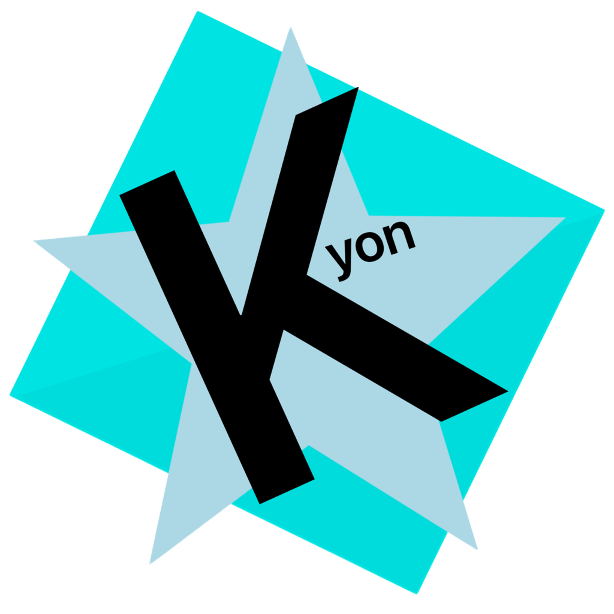

kyon linux
an independent arch-based custom distribution with a custom package manager (nya) made from scratch designed with a focus on user-friendly accessibility and refined aesthetics.
nya!
music
visualizer
the song of the day is picked from the date — autoplaying…
gallery
a few screenshots so you know what you're getting into.
wiki & asked questions
things people keep asking me. tap a card to open it.
credits
the people who made this whole thing happen. thank you <3
developing notes
what's been happening lately. it's a lot.